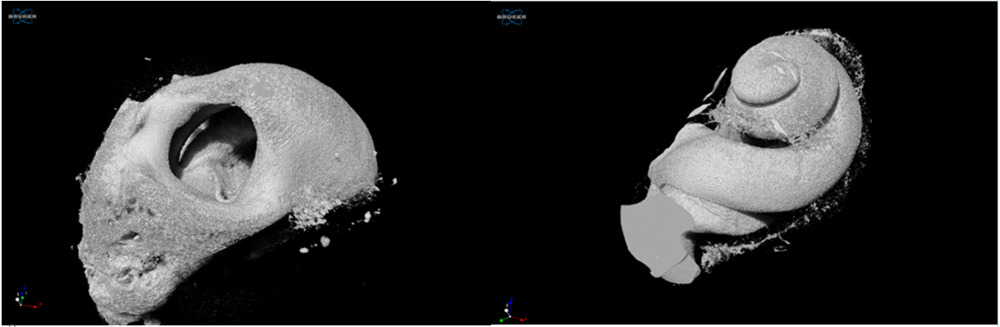

interactive 3D sheep cochlea
Interactive 3D model: Based on the 3D model from microCT, we created interactive online application here for you to explore the cochlea. It also includes the balance system. Let’s explore!


Cochlea labyrinth microCT: Using microCT, we have constructed 3D model of the cochlea. LEFT: External features of the cochlea – mainly the bony shell is visible. RIGHT: In this model, fluid filled inside space of the cochlea is modelled 3D.